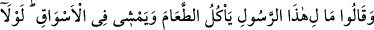
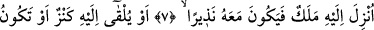
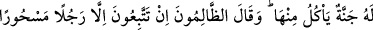
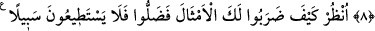
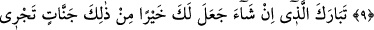
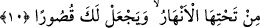

BAK NE BİÇİM
TEMSİLLER GETİRDİLER
7. Onlar (bir de) şöyle dediler: Bu ne biçim peygamber; (bizler gibi) yemek yiyor,
çarşılarda dolaşıyor! Ona bir melek indirilmeli, kendisiyle birlikte o da uyarıcı
olmalıydı!
8. Yahut kendisine bir hazine verilmeli veya içinden yeyip (meşakkatsizce
geçimini sağlayacağı) bir bahçesi olmalıydı. (Ayrıca) o zâlimler (müminlere): Siz,
ancak büyüye tutulmuş bir adama uymaktasınız! dediler.
9. (Rasûlüm!) Senin hakkında bak ne biçim temsiller getirdiler! Artık onlar
sapmışlardır ve (hidâyete) hiçbir yol da bulamazlar.
10. Dilerse sana bunlardan daha iyisini, altlarından ırmaklar akan cennetleri
verecek ve sana saraylar ihsan edecek olan Allah’ın şânı yücedir.
“Onlar” Kureyş’in ileri gelenlerinden Ebû Cehl, Utbe, Ümeyye ve Âs gibi müşrikler
Kâbenin etrafında toplandıkları zaman “(bir de) şöyle dediler: Bu ne biçim
peygamber;” Bu sözle Hz. Peygamber (a.s.)’ın mevkiini küçümseme vardır. O’na
“peygamber” demeleri de alay etmek içindir. “(Bizler gibi) yemek yiyor, çarşılarda
dolaşıyor!” Yâni peygamberlik iddiâsında bulunan bu kişi bizim gıdalanmak için yemek
yediğimiz gibi yemek yediği, geçim temini için gezindiğimiz gibi sokaklarda yürüdüğü
halde ne oldu da hangi gerekçeyle peygamberlik iddiâsında bulunuyor? demektir.
Kâfirler peygamberin bir insan şeklinde olmasını yadırgadılar ve inkâr ettiler. Yâni
eğer iddiâsı doğru ise durumu bizim durumumuzdan neden farklı değil dediler. Bir kısmı
ise ‘O melek de melik de değil. Çünkü melekler yemezler ve içmezler. Krallar ise
çarşıdan ne bir şey satın alır ne de ortalıkta dolaşırlar. Hz. Peygamber (s.a.)’in
kendileri gibi olmasına, vücut ve konum itibariyle belirgin bir üstünlüğünün
bulunmamasına şaşırdılar. Çünkü onların basîretleri yoktur ve yalnızca hissedilen, gözle
görülen şeyleri düşünürler. Çünkü peygamberlerin diğer insanlara üstünlüğü ve